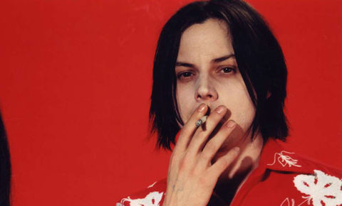

Джек Уайт(англ. Jack White, настоящее имя Джон Энтони Гиллис, англ. John Anthony Gillis; 9 июля 1975 года, Детройт, Мичиган, США) — американский рок-музыкант, певец, гитарист, автор песен, продюсер, мультиинструменталист, актёр, наибольшую известность получил как лидер группы The White Stripes. В 2003 году журнал Rolling Stone поместил Джека Уайта на 17-е место в списке «100 величайших гитаристов всех времён».
В 2005 году стал одним из организаторов группы The Raconteurs. В 2009 году играет с группой The Dead Weather (как вокалист и ударник). Джек также играет на бас-гитаре, пианино, ударных инструментах, банджо и др.
23 апреля 2012 года Уайт выпустил свой дебютный альбом Blunderbuss, который возглавил альбомные чарты США и Великобритании.
В течение 1990-х Уайт был частично занят в качестве музыканта в различных гаражных группах в Детройте, работая днем как обивщик мебели. В 1997 году Джек совместно с Мэг Уайт основал группу The White Stripes. Группа подвергалась критике на протяжении первых двух альбомов, но после выхода третьей пластинки White Blood Cells мир капитулировал, обрушив на ребят славу. Уайт попал на 17-ю позицию в списке «100 лучших гитаристов всех времён» по версии журнала Rolling Stone Успех с The White Stripes позволил Джеку как соло-гитаристу сотрудничать с такими исполнителями, как Бек, The Rolling Stones, Джефф Бек, Алиша Киз, Боб Дилан и Лоретта Линн.
У Джека шотландско-канадские и польские корни. Уайт — самый младший из десяти детей семьи (семь сыновей, три дочери) родился в Детройте, штат Мичиган, сын Терезы и Гормана Гиллисов. Родители работали в Детройтской Митрополии как техник по обслуживанию оборудования и секретарь Кардинала, соответственно. В конечном итоге маленький Джон стал церковным послушником, благодаря чему в 1987 году получил роль в фильме «Убийства по чёткам». Будучи ребёнком, он был поклонником классической музыки. Джек Уайт начал играть на музыкальных инструментах (барабаны) в возрасте пяти лет.
Уайт рос в юго-западном Детройте, в семье с достатком ниже среднего класса. Его музыкальное предпочтение не было такими же как у одноклассников, которые слушали электронную музыку и хип-хоп. Подростка увлекали блюз и рок 1960-х, влияние которых крайне заметно в творчестве White Stripes. Сон Хаус и Слепой Вилли Мактелл являются его любимыми блюз-исполнителями. Во многих интервью говорится что песня Grinnin In Your Face Сона Хауса является любимой песней за все время. Джек и его друг детства Доминик Сучита слушали записи на чердаке дома семьи Гиллис по уик-эндам, и начали делать запись кавер-версий песен на старом 4-дорожечном катушечнике. Тогда Джека можно было описать как «ребёнок с короткими волосами и скобами».
В 2005 году на шоу «60 Минут», Уайт рассказал Майку Уолласу, что его жизнь могла оказаться иной. "Я был принят в семинарию в Висконсине, и я действительно собирался становиться священником, но в последнюю секунду я подумал: «Я пойду в государственную школу… Я только что получил новый усилитель, он стоит в моей спальне, и я не думаю, что мне разрешат взять его с собой.»
В 15 лет Джек Уайт начал трёхлетнее обучение мастерству обивки мебели у друга семьи Брайена Малдуна. Уайт замечал, что именно Малдун приучил его к панк-музыке, и он подтолкнул его играть совместно в группе: «Он играл на барабанах… , что ж, хорошо, тогда я буду играть на гитаре». Дуэт записал альбом Makers of High Grade Suites, команда назвалась The Upholsterers («Обивщики»). Далее Джек начал собственное дело, ателье по обивке, названное Third Man Upholstery. Лозунг его бизнеса был таков: Your Furniture’s Not Dead (Ваша мебель не мертва), цвета были жёлто-чёрными — включая жёлтый фургон, жёлтое-чёрную униформу и жёлтый клипборд. В то время как его мини фирма не испытывала недостаток в клиентах, Уайт утверждал, что это не было выгодно, из-за его самодовольства и его практики деловых отношений, которая была воспринята как непрофессиональная, включая размещение объявлений в постелях и записки со стихами внутри мебели. Спустя небольшой промежуток времени, Джек Уайт провёл свой первый профессиональный концерт в качестве барабанщика Детройтской группы Goober & the Peas. Он также играл в других местных группах и также делал сольные шоу. Одним из самых незабываемых шоу стал концерт, состоявшийся примерно в 1994 году с группой Nova Ovens на открытии кофе-шопа под названием Planet Ant in Ham.
Джек Уайт сформировал The White Stripes (Белые полосы) с Мэг Уайт в 1997 году. Группа начала свою карьеру, как единица Мичиганского гаражного рока на андеграундной музыкальной сцене, наряду с местными группами, такими как Bantam Rooster, The Dirtbombs, The Paybacks, Rocket 455 и The Henchmem и многими другими. В 1998 году White Stripes, благодаря Дейву Бьюику, оказались на Italy Records — маленьком и независимом Детроитском лейбле, специализирующемся на гаражном панке. Группа выпустила свой дебютный альбом в 1999 году, название дублировало имя команды The White Stripes. Год спустя альбом был развит, ставшим культовым и классическим впоследствии, альбомом De Stijl. Альбом, в конечном счете, достиг 38-го места в топе независимых альбомов Billboard, когда группа уже обрела популярность.
Уайт сформировал The Raconteurs, в 2005 году вместе с Бренданом Бенсоном, Джеком Лоуренсом и Патриком Килеромом. Первую песню группы Steady, As She Goes, Джек написал вместе с Бенсоном. После чего они решили создать полную группу, и пригласили Лоуренса и Килера. В этом же году, группа собралась вместе в Детройте и записали альбом. Дебютный альбом Broken Boy Soldiers был записан в доме Бенсона. Группа организовала тур, в поддержку альбома, который также включал 8 выступлений на разогреве у Боб Дилана. Второй альбом группы Consolers of the Lonely с заглавным синглом Salute Your Solution, был отмечен номинацией на «Грэмми».
В начале 2009 года, Уайт формирует новую супергруппу The Dead Weather, вместе с вокалисткой The Kills Элисон Моссхарт. Джек взял на себя обязанности вокалиста и барабанщика, на роль бас-гитариста он берет Джек Лоуренс из The Raconteurs, на роль клавишника и гитариста был приглашен Дин Фертита из группы Queens of the Stone Age. 14 июля, того же года группа выпускает дебютный альбом Horehound, выпущенный через лейбл Уайта Third Man Records. В октябре Моссхарт заявляет, что новый альбом почти готов. Новый сингл Die by the Drop выходит 30 марта 2010 года, а 11 мая выходит второй студийный альбом Sea of Cowards.